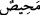

ifâde etmektedir. Buradaki “şehîd” kelimesi şehâdet kökünden olup” şâhid” demektir.
Yahut “şühûd” kökünden olup, “Onları gören yok” demektir. Çünkü bu sitem zamanında
müşrikler Allah’a ortak koştukları nesneleri göremezler.
Müftî Sa’dî “Havâşî”sinde şöyle demiştir: Zâhir olan şudur ki müşriklerin “Bizden
hiçbir gören yok” demeleri, onların “Rabbimiz! Allah hakkı için biz ortak koşanlar
olmadık” (el-En’âm, 6/23) demeleri gibidir. Bilakis burada, “Arz ederiz” demeleri, ilk
verdikleri cevaba işarettir ki bundan yalanı kasdetmektedirler.
İrşâd’da şöyle denmiştir: Müşriklerin “Arz ederiz” demeleri, ya daha önce
kendilerine yapılan sitemden dolayıdır, ya da bir şeyi haber kalıbında ilk defa
arzetmektir.
48. Böylece önceden yalvarıp durdukları onlardan uzaklaşmıştır. Kendilerinin
kaçacak yerleri olmadığını anlamışlardır.
Müşriklerin “Önceden yalvarıp durdukları şeyler”, ilâhlar ortadan kayboldu, yahut
bu ilâhların faydasız oldukları ortaya çıktı. Sonuçta orada bulunmaları, bulunmamaları
gibi oldu. “Onlardan sapıp gitmiş ve onlar”, artık o müşrikler “kendileri için kaçacak
bir yer olmadığını anlamışlardır.” Onların azap ve ukûbetten kaçabilecekleri hiçbir
yer yoktur.
Burada “
” kelimesi kişi kaçtığı zaman söylenir. Müfredât kitabında şöyle
anlatılmaktadır: Bu “
” kelimesinin aslı Arapların “kişi şiddet ve zorluğa düştü”
sözünden alınmıştır. “Haktan şiddet, zorluk ve nahoş işlere döndü” demektir. Kâmûs’ta,
“döndü” demektir. “Mehîs, mahîd, ma’dil, meyl, mehreb ve zan” hep bu mânâlara
gelmektedir. Nefiy harfi ile bu kelime üzerinde ta’lîk vukû bulmuştur. “Ta’lîk” demek,
“kendisinden sonra iki mef’ûl makâmına kâim olacak bir kelimenin getirilmesi”
demektir.
Âyet-i kerîmede şu husûsa işaret edilmektedir: Allah Teâlâ kıyâmet günü; “Hani
nerede kendi fiil ve amellerini yarattıklarına inanan benim ortaklarım?” “diye nidâ eder.
Onlar da: “Arz ederiz ki bizden onların bir iş yaptığını gören yoktur” derler. Artık
Allah’tan başka yaratan olmadığını keşfen müşâhede etmiş olurlar.
Bunlar “Kul kendi fiilini kendisi yaratır” diyen Mu’tezile fırkasıdır. Rustuğfenî’ye
“ehl-i sünnet ile Mu’tezile arasında izdivaç/evlenme” konusu soruldu. Câiz olmadığı
yönünde fetvâ verdi. Mecmau’l- Fetâvâ’da da böyledir. Çünkü Mu’tezile mezhebine
mensup olanlar; “Kullar fillerini kendileri yaratır” demekle müşrik konumunda
oluyorlar. Halbuki Allah Teâlâ; “İmân etmedikçe müşrik (putperest) kadınlarla
evlenmeyin..” (el-Bakara, 2/221) buyurmaktadır. Kul, Allah’ı birleyip, “Allah’tan
başka yaratıcı yoktur” demelidir. Zaten hakîkatte Allah’tan başka varlık yoktur. Bundan